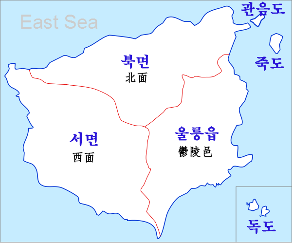
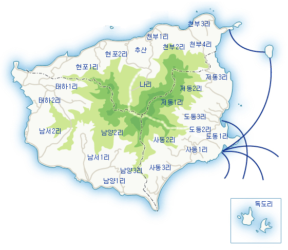

■ 울릉도 소개
3무 5다(3無 5多)
도둑, 공해, 뱀이 없고(3무),
향나무, 물, 바람, 미인, 돌이 많다(5다).
울릉도는 대한민국에서 7번째로 큰 섬이나
울릉도와 제주도를 제외하곤 모두 육지와 연륙되어 있어 실질적으로는 2번째로 큰 섬이 울릉도다.
우리나라 대표적인 화산섬중 독도가 가장 먼저 생겨났고 그 다음이 울릉도며 제주도가 마지막이다.
울릉도는 250만 년 전 화산폭발로 솟아오른 거대한 화산체 중 일부가 수면위로 노출된 해산(海山)으로 바다 속에서 솟아오른 산이다.
화산체의 70%는 수면 아래에 잠겨 있으며 화산체 산봉우리에 해당하는 30%를 우리는 ‘울릉도’라고 부른다.
울릉도의 최고봉인 성인봉(987m)은 화산이 폭발하면서 생긴 칼데라 화구가 삼각형 모양으로 함몰되었고, 함몰된 분화구를 둘러싼 산의 형태를 외륜산이라 부르며 외륜산의 주봉이 성인봉인 것이다.
울릉도 옛 지명이 우산국인 것도 동해 한가운데 우뚝 솟은 울릉도가 하나의 산과 같이 보였기 때문이라는 사실과 무관하지 않다.
화산 폭발 시 마그마가 빠져 나간 중심 화구에 화산재와 화산쇄설물이 쌓이고 그 하중을 이기지 못하고 내려앉은 칼데라가 지금의 60만평 규모의 나리분지다.
1882년 고종 19년 울릉도 개척령이 반포되고 1883년부터 주민들이 나리분지로 이주해 오면서 먹을 것이 없어 섬말나리 뿌리를 캐먹고 연명했다고 하여 ‘나리’라는 지명이 만들어졌다.
그러나 한자의 의미로 ‘나리’를 해석하면 ‘비단처럼 아름다운 마을’이라는 뜻도 있다.
도동항은 군청을 중심으로 부근에 행정관청이 밀집해 있고 가장 번화하여 관광과 상업의 중심 항으로서의 역할,
울릉도에서 가장 큰 항구인 저동항은 선박의 90%를 수용하며 어업전진기지로서 역할,
사동항은 새롭게 시설된 항구다.

■ 울릉도 연혁
고종 19년(1882년) 울릉도 개척령이 반포되면서 광무4년(1900년) 울릉도는 울릉군으로 개칭되어 강원도에 편입된다.
이후 1906년 울릉군을 경상남도로 편입시켰다가
1914년 다시 경상북도로 이속시키는 과정을 거쳐 오늘에 이른다.
1979년 남면이 울릉읍으로 승격되고 2000년에는 독도를 독도리로 신설하였다.
그래서 울릉군은 현재 1개의 울릉읍(도동리, 저동리, 사동리, 독도리)과
2개의 면인 북면(나리, 천부리, 현포리)과
서면(남서리, 남양이, 태하리)으로 행정구역이 나뉘어 1읍 2면 10개의 법정리와 25개의 행정리로 편성되어 있다.
1900년 초 도동리에 자치 지휘소를 설치하고 이를 도방청(道方廳)이라 불렀는데 도방청이란 번화한 곳을 뜻하는 것으로 이후 도방청 포구의 첫 글자인 도(道)자를 따서 ‘도동(道同)’이라 하였다.
‘저동(苧洞)’은 개척 당시 갯벌에 모시가 많아 모시개라 부르다가 모시저[苧]자의 한자를 취해 저동이라 불렀다.
그리고 ‘사동(沙洞)’은 모래해변이 없는 울릉도에 옥과 같은 맑은 모래가 바닷가에 가로 놓여 있어 이곳 지명을 와옥사(臥玉沙)라 부르다가 와록사(臥鹿沙)가 되었다. 이이후 와록사가 한자식 이름으로 표기되면서 모래사[沙]자만 취해 오늘날 사동이라 부르게 되었다.
‘독도(獨島)’는 섬 전체가 바위로 돼있다 하여 돌섬이 독섬이 되었다가 독도(獨島)로 한문 표기되었다고 한다.
울릉군의 군목(郡木)은 후박나무이고 군화(郡花)는 동백꽃이며 군조(郡鳥)는 흑비둘기이다.
그리고 울릉군을 상징하는 캐릭터는 오기동이(오징어)와 해호랑(호박)이다.
또한 천연기념물 제 336호인 독도를 포함하여 천연기념물 48호인 통구미 향나무 자생지와 49호인 대풍감 향나무 자생지 등 천연기념물과 지정문화재가 15개에 이른다.
특히 군화인 동백꽃의 꽃말이 진실한 사랑과 겸손한 마음이니 사랑하는 가족과 연인, 친구과 지인들이 울릉도를 많이 찾는 이유가 아닐까.
전망대가 일품인 ‘내수전’은 김내수라는 사람이 화전을 일구며 살았다는 지명 유래가 전한다.
‘봉래폭포’는 처음엔 굴등이라 하였는데 폭포 꼭대기에 굴이 있고 그 굴속에 절이 있다 하여 붙여진 명칭이다.
그러다 1934년 일본인 도사(지금의 군수)가 이 폭포를 보고 개발만 잘하면 제2의 금강산이 되겠다 하여 금강산의 여름 명칭인 봉래를 착안하여 붙여진 명칭이 봉래폭포라고 생각한다.
관광객들이 가장 많이 찾는 곳 중에 하나인 ‘관음도(觀音道)’는 개척 당시 경주에서 입도한 김씨 성을 가진 사람이 배를 타고 고기를 잡다가 태풍을 만나 이 섬에 표류했다고 한다. 추위와 굶주림에 떨던 김씨는 밤에 불을 피워 놓았는데 갈매기와 흡사하게 생긴 깍새(슴새)가 수없이 날아와 그 깍새를 잡아 구워 먹었다는 전설이 전한다. 그래서 관음도를 깍새섬 또는 깍깨섬이라 부르게 되었는데
섬이 너무 아름다워 관세음보살이 내려와 살았다고 하여 관음도라 부르게 되었다.
섬 아래에 두 개의 쌍굴이 있는데 옛날 해적들의 소굴이었던 관음쌍굴에 해적들이 배를 숨기고 있다가 지나가는 배를 약탈했다는 이야기가 전한다.
관음도에서 내다 보이는 ‘죽도’는 대나무가 많아 댓섬이라 불린다. 죽도는 울릉도의 부속섬 가운데 가장 큰 섬이며 현재에도 사람이 살고 있는 유인도이다.
본도와는 달리 평탄하지만 식수가 없어 빗물을 받아 식수로 사용하고 있으며 도동항에서 비정기 유람선이 여름철에만 운영하고 있다는 것이 아쉽다.
죽도의 유일한 진입로는 나선형 달팽이 계단이며 계단 수가 무려 365개나 되어 체력과 인내심이 요구되지만 꼭 한번 가 볼만한 울릉도의 명소이다.